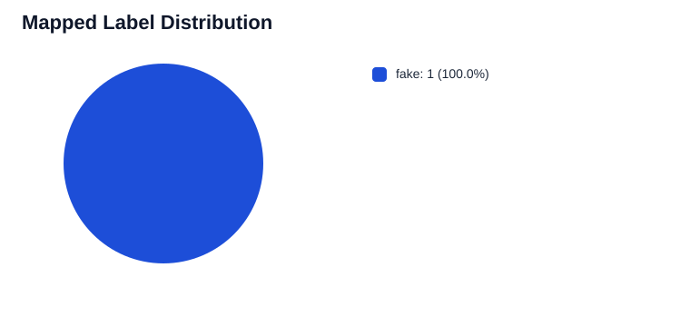
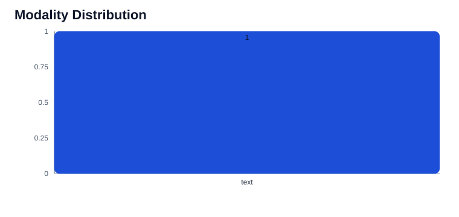
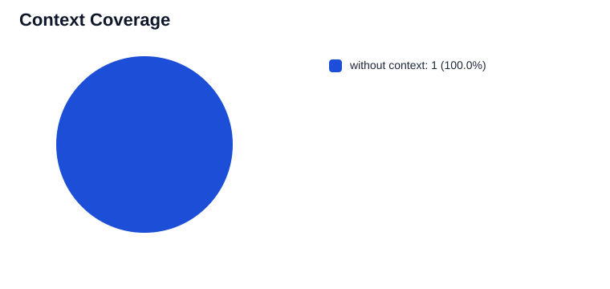
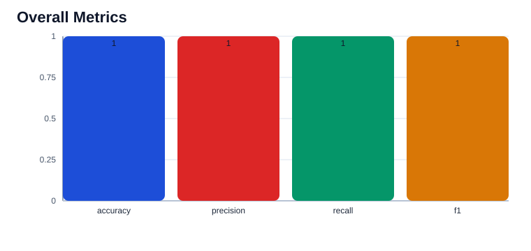

claimreview Visualization Dashboard
Static dashboard generated by the experiment pipeline for easier inspection than raw JSON or CSV outputs.
Samples
1
Retention
1
Accuracy
1
F1
1
With context
0
With image
0
Mapped Label Distribution

Modality Distribution

Context Coverage

Overall Metrics

Mapped Labels
| Label | Count |
|---|---|
| fake | 1 |
Metadata Field Coverage
| Field | Records |
|---|---|
| review_url | 1 |
| review_publisher | 1 |
| review_date | 1 |
| claimant | 1 |
| rating_bucket | 1 |
Prediction Sample
| Sample ID | Ground Truth | Predicted | Confidence |
|---|---|---|---|
| cr_record_976192a9fa4b | fake | fake | 0.8 |